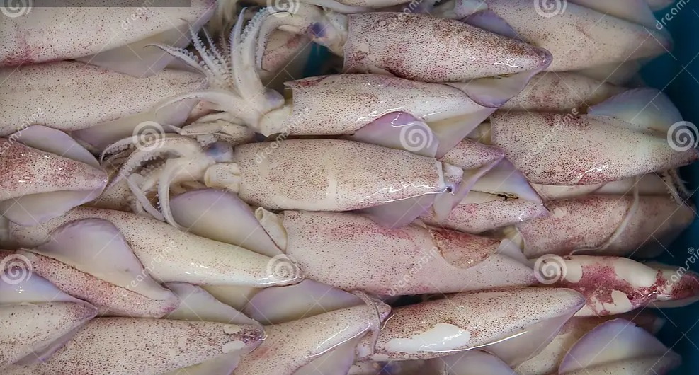
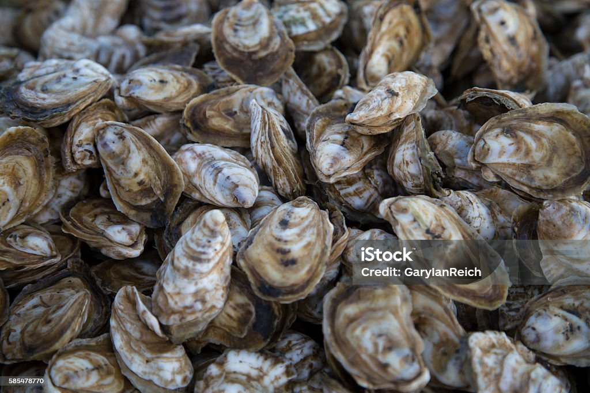

Squid
Rs. 550/kg

Crab
Rs. 650/kg

Fish
Rs. 300/kg

Oyster
Rs. 600/kg
AquaTradeX introduces a B2B trading platform with blockchain-based traceability, connecting farmers, buyers, and suppliers for transparent pricing, efficient logistics, and secure transactions.
Get StartedIndulge in the finest selection of fresh, high-quality seafood sourced directly from the ocean and delivered at prices that won’t stretch your budget. Whether you're craving the delicate sweetness of succulent shrimp, the rich, buttery texture of lobster, the firm, flaky goodness of tender fish fillets, or the irresistible brininess of oysters and scallops, we bring you the best seafood at the best prices.
Treat yourself and your loved ones to mouthwatering seafood that’s incredibly fresh, irresistibly delicious, and priced just right. Order today and savor the best flavors of the ocean!
Give your aquatic stock the best with our high-quality, nutrient-rich sea feeds at prices that fit your budget! Designed to support fast growth, strong immunity, and optimal health, our sea feeds provide the perfect balance of proteins, vitamins, and essential nutrients for fish, shrimp, and other aquatic life.
Keep your aquaculture thriving with cost-effective, high-nutrition sea feeds that maximize results without increasing costs. Order today and watch your seafood stock flourish!
Experience the power of the ocean with our sea moss and sea algae-infused cosmetics, designed to hydrate, rejuvenate, and nourish your skin—all at prices that won’t break the bank! Packed with minerals, antioxidants, and natural hydration, our products help you achieve radiant, youthful skin the natural way.
Give your skin the nourishment it deserves with our affordable, ocean-inspired skincare collection. Order today and glow the natural way!
Transparency matters when it comes to fresh, high-quality seafood. That’s why our app provides a real-time water quality and temperature tracking feature, ensuring that you know exactly where your seafood comes from and the conditions in which it was raised.
With this feature, you’re not just buying seafood—you’re making an informed choice for better quality, better taste, and better health. Trust the source, taste the difference!
Take the guesswork out of aquaculture with our AI-Integrated Farm Fishery Advisory feature! Designed to analyze real-time data, predict trends, and provide expert recommendations, our AI system helps you optimize fish health, water conditions, and overall farm productivity effortlessly.
With our AI-Powered Fishery Advisory, you can farm smarter, reduce risks, and increase profitability—all while ensuring the best conditions for your seafood. Experience the future of aquaculture today!
Squid
Rs. 550/kg
Crab
Rs. 650/kg
Fish
Rs. 300/kg
Oyster
Rs. 600/kg
For further details or inquiries, feel free to reach out to us. We're here to assist you!
Email: aquatradex@gmail.com
Phone: 9876543210